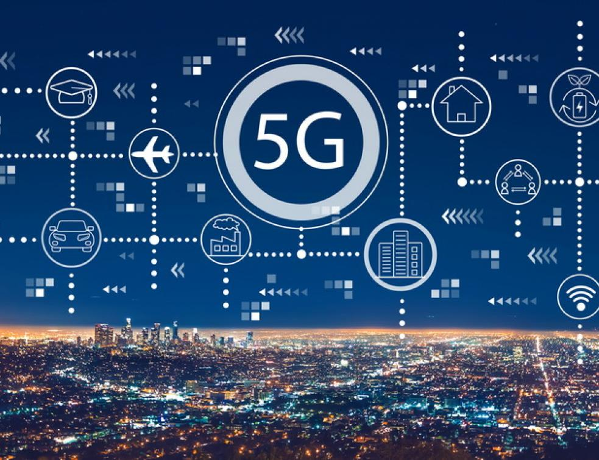

23/07/2020 à 14h30
Qu’est-ce que la « 5G » ?
La « 5G » est la cinquième génération de réseaux mobiles, qui succède aux technologies 2G, 3G et 4G.
Les premières technologies ne permettaient que les appels vocaux puis l’envoi de SMS. Les générations suivantes de technologies mobiles ont permis de développer de nouveaux usages : se connecter à internet, accéder à des applications, ou encore passer des appels en vidéo.
Comme les technologies précédentes, la 5G améliorera les services existants et favorisera le développement de nouveaux services. La 5G est une technologie évolutive qui va s’enrichir progressivement, au gré de l’évolution des standards au niveau mondial.
Que va apporter la 5G ?
À son lancement, la 5G va améliorer l’accès aux services proposés par les réseaux 4G en permettant notamment un meilleur débit et plus de capacité. En particulier, avec la 5G, une quantité beaucoup plus importante de données peut être échangée sans engorgement des réseaux.
Elle favorisera ensuite le développement de services innovants pour les particuliers et pour les entreprises dans de nombreux domaines.
Dans le domaine de la santé, par exemple, la gestion des équipements médicaux dans l’hôpital, la télémédecine ou encore la prévention de maladies chroniques figurent parmi les applications envisagées de la 5G.
Dans le domaine des transports, de nombreuses applications sont également envisagées, comme par exemple les navettes autonomes, la gestion du trafic de véhicules (ex pour le transport routier : autoriser un suivi de près des camions, ce qui permet entre autres de réduire la consommation énergétique associée), ou encore le pilotage à distance de véhicule pour des interventions en zone sensible.
La 5G est elle-même une technologie qui a vocation à évoluer : à l’instar des technologies mobiles précédentes, ses performances vont progresser (débit, réactivité, capacité à supporter beaucoup d’usagers en même temps). De nouvelles fonctionnalités pourront être progressivement proposées par les opérateurs dans les prochaines années au fur et à mesure de l’évolution de la 5G et des fréquences sur lesquelles elle sera déployée.
Pourquoi faut-il de nouvelles fréquences ?
Les réseaux mobiles se caractérisent par la possibilité pour les utilisateurs de connecter leurs terminaux (téléphones mobiles, smartphones) directement aux antennes des opérateurs par l’utilisation d’ondes (ou fréquences) radio. L’Arcep autorise les opérateurs mobiles (et donc leurs clients) à utiliser des fréquences radio sur lesquelles ils font fonctionner leurs réseaux 2G, 3G et 4G.
Même si les réseaux actuels ont supporté l’augmentation de trafic lors de la crise sanitaire, les fréquences actuellement disponibles ne permettront pas de répondre à l’augmentation continue du trafic. Le saut de performance permis par la technologie 5G accompagné de l’attribution de nouvelles fréquences dans la bande 3,5 GHz permet de répondre à la croissance et à la diversification des usages.
Ultérieurement, l’Arcep préparera l’attribution de la bande de fréquences 26 GHz, qui possède des propriétés intrinsèquement différentes des autres bandes de fréquences, inférieures à 6 GHz, utilisées par les opérateurs mobiles. Quelques services avec de très forts besoins de bandes passantes sont envisagés comme par exemple des services de multimédia augmenté avec multiples prises de vues lors d’événements sportifs ou culturels ou encore la gestion d’outils industriels dans les usines.
Joy Clotaire
DAMY Joyot Mamet Clotaire